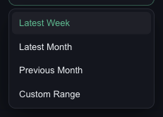
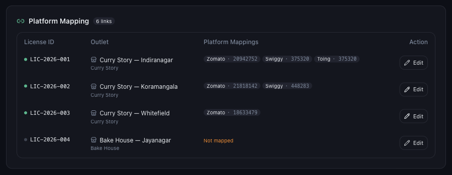

A wrong filter looks exactly like missing data. Open the filter panel on the left and set DATE to a range that definitely covers the gap.

| Latest Week | The most recent full week Mynt holds. |
|---|---|
| Latest Month | The most recent full month. |
| Previous Month | The month before that. |
| Custom Range | Any two dates you choose — the one to use when chasing a specific gap. |
While you are there, set PLATFORM to All Platforms and SELECT OUTLET to Select all. Narrow filters are the single most common cause of a “missing” week.
Mynt can only show what arrived by email. Open the mailbox connected in Settings → Email Integration and search for the Zomato or Swiggy settlement email covering those dates.
If a restaurant ID was not mapped when Mynt processed that week’s email, that outlet’s numbers for that week are missing or under-reported. Go to Settings → Outlet Mapping and check the Platform Mapping table.

Set PLATFORM to Zomato alone, then Swiggy alone. If only one is blank, the problem is that platform’s ID or its emails, not Mynt as a whole. See why one platform can be missing.
If the emails exist, the mapping is right and the filters are wide, support needs these five things:
See how to raise a data issue ticket.
Or open Help & Support in Mynt and raise a ticket.